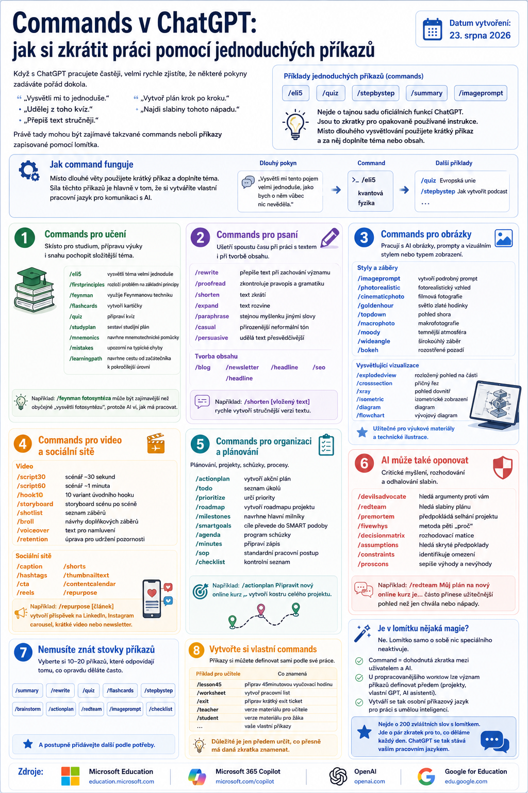

Když s ChatGPT pracujete častěji, velmi rychle zjistíte, že některé pokyny zadáváte pořád dokola.
- „Vysvětli mi to jednoduše.“
- „Udělej z toho kvíz.“
- „Přepiš text stručněji.“
- „Vytvoř plán krok po kroku.“
- „Najdi slabiny tohoto nápadu.“

Právě tady mohou být zajímavé takzvané commands neboli příkazy zapisované pomocí lomítka.
Například:
/quiz
/stepbystep
/summary
/imageprompt
Důležité je vědět, že nejde o nějakou tajnou sadu oficiálních funkcí ChatGPT. Jsou to především zkratky pro opakovaně používané instrukce.
Místo dlouhého vysvětlování jednoduše použijete krátký příkaz a za něj doplníte téma nebo obsah, se kterým chcete pracovat.
Jak command funguje
Představte si například, že se potřebujete naučit nové téma.
Místo věty:
„Vysvětli mi tento pojem velmi jednoduše, jako bych o něm zatím vůbec nic nevěděla.“
můžete napsat:
Podobně můžete zadat:
/stepbystep Jak vytvořit podcast
a nechat si vytvořit kvíz nebo získat postup krok po kroku.
Síla těchto příkazů není ani tak v samotném lomítku. Je hlavně v tom, že si postupně vytváříte vlastní pracovní jazyk pro komunikaci s AI.
Commands pro učení
Velká skupina příkazů se hodí při studiu, přípravě výuky nebo snaze pochopit složitější téma.
- /eli5 – vysvětlí téma velmi jednoduše,
- /firstprinciples – rozloží problém na základní principy,
- /feynman – využije Feynmanovu techniku a hledá mezery v porozumění,
- /flashcards – vytvoří kartičky,
- /quiz – připraví kvíz,
- /studyplan – sestaví studijní plán,
- /mnemonics – navrhne mnemotechnické pomůcky,
- /mistakes – upozorní na typické chyby,
- /learningpath – navrhne cestu od začátečníka k pokročilé úrovni.
Například:
může být zajímavější než obyčejné „vysvětli fotosyntézu“, protože AI rovnou říkáte, jakým způsobem má s tématem pracovat.
Commands pro psaní
Stejný princip lze velmi dobře využít při práci s textem.
- /rewrite – přepíše text při zachování významu,
- /proofread – zkontroluje pravopis a gramatiku,
- /shorten – text zkrátí,
- /expand – naopak jej rozvine,
- /paraphrase – vyjádří stejnou myšlenku jinými slovy,
- /casual – upraví text do přirozenějšího neformálního tónu,
- /persuasive – udělá text přesvědčivější.
Při tvorbě obsahu se mohou hodit například:
Například:
může být rychlý způsob, jak z dlouhého textu vytvořit stručnější verzi pro web nebo sociální sítě.
Commands pro obrázky
Zajímavá je také skupina příkazů zaměřených na práci s AI obrázky a obrazovými prompty.
může být pokyn, aby AI původní jednoduchý nápad převedla do podrobnějšího promptu pro generátor obrázků.
Další commands mohou určovat například styl nebo způsob zobrazení:
- /photorealistic – fotorealistický vzhled,
- /cinematicphoto – filmová fotografie,
- /goldenhour – světlo zlaté hodinky,
- /topdown – pohled shora,
- /macrophoto – makrofotografie,
- /moody – temnější atmosférický styl,
- /wideangle – širokoúhlý záběr,
- /bokeh – výrazně rozostřené pozadí.
Velmi zajímavé jsou také příkazy zaměřené spíše na vysvětlující vizualizaci:
- /explodedview – rozložený pohled na jednotlivé části objektu,
- /crosssection – příčný řez,
- /xray – pohled dovnitř objektu,
- /isometric – izometrické zobrazení,
- /diagram – diagram,
- /flowchart – vývojový diagram.
Právě ty mohou být užitečné například při tvorbě výukových materiálů nebo technických ilustrací.
Commands pro video a sociální sítě
Pokud vytváříte videa, můžete podobným způsobem pracovat také se scénářem.
/script60 · scénář na jednu minutu
/hook10 · deset variant úvodního hooku
/storyboard · storyboard scénu po scéně
/shotlist · seznam potřebných záběrů
/broll · návrhy doplňkových záběrů
/voiceover · text pro namluvení
/retention · úprava scénáře s ohledem na udržení pozornosti
Pro sociální sítě lze využít například:
Poslední z nich je podle mě obzvlášť praktický.
Máte například hotový článek a zadáte:
AI pak můžete požádat, aby z něj vytvořila příspěvek na LinkedIn, Instagram carousel, krátké video nebo newsletter.
Commands jako pomocník při organizaci práce
Velmi praktická je také sada příkazů pro plánování a organizaci.
- /actionplan – vytvoří akční plán,
- /todo – seznam úkolů,
- /prioritize – určí priority,
- /roadmap – vytvoří roadmapu projektu,
- /milestones – navrhne hlavní milníky,
- /smartgoals – převede cíle do SMART podoby,
- /agenda – vytvoří program schůzky,
- /minutes – připraví zápis,
- /sop – vytvoří standardní pracovní postup,
- /checklist – kontrolní seznam.
Například:
může během několika sekund vytvořit první kostru celého projektu.
AI nemusí jen tvořit. Může vám také oponovat
Jedna z nejzajímavějších skupin commandů je zaměřená na kritické myšlení a rozhodování.
- /devilsadvocate – záměrně hledá argumenty proti vašemu názoru,
- /redteam – hledá slabiny vašeho plánu,
- /premortem – předpokládá, že projekt selhal, a hledá možné příčiny,
- /fivewhys – využije metodu pěti „proč“,
- /decisionmatrix – vytvoří rozhodovací matici,
- /assumptions – hledá skryté předpoklady,
- /constraints – identifikuje skutečná omezení,
- /proscons – sepíše výhody a nevýhody.
Například:
může být často užitečnější než požádat AI pouze o pochvalu nebo další nápady.
AI v tomto případě nepoužíváme jen jako generátor textu, ale také jako partnera pro kontrolu vlastního uvažování.
Nemusíte se učit stovky příkazů
Na internetu můžete najít seznamy obsahující desítky nebo dokonce stovky různých commands.
Nemá ale příliš smysl učit se je všechny nazpaměť.
Mnohem praktičtější je vybrat si například 10 až 20 příkazů odpovídajících činnostem, které skutečně děláte často.
A postupně si k nim přidávat další.
Můžete si vytvořit i vlastní commands
A právě tady začíná být celý princip ještě zajímavější.
Nemusíte používat pouze commands, které někdo zveřejnil na internetu.
Můžete si vytvořit vlastní příkazy odpovídající přesně vaší práci.
Učitel si například může definovat:
/worksheet – vytvoř pracovní list
/exit – připrav krátký exit ticket
/teacher – vytvoř verzi materiálu pro učitele
/student – vytvoř verzi pro žáka
Marketér může mít úplně jinou sadu, stejně jako programátor, grafik nebo podnikatel.
Důležité je jen předem určit, co přesně má daná zkratka znamenat.
Je v lomítku nějaká magie?
Ne.
Samotné lomítko žádnou zvláštní schopnost ChatGPT neaktivuje.
Command je v podstatě dohodnutá zkratka mezi uživatelem a AI.
Pokud AI rozumí tomu, co má například /quiz, /redteam nebo váš vlastní /lesson45 znamenat, může podle tohoto pokynu pracovat.
U propracovanějšího workflow lze význam příkazů definovat předem v instrukcích projektu, vlastním GPT nebo jiném AI asistentovi. Pak může vzniknout něco jako osobní příkazový jazyk pro práci s umělou inteligencí.
A právě v tom podle mě spočívá největší výhoda commands.
Nejde o to zapamatovat si dvě stovky zvláštních slov s lomítkem.
Jde o to vybrat si několik zkratek pro činnosti, které opakujeme každý den.
ChatGPT pak přestává být jen prázdným chatovacím oknem, do kterého pokaždé znovu formulujeme celý požadavek.
Postupně si s ním vytváříme vlastní pracovní jazyk.